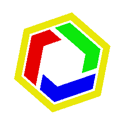
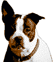

欢迎使用 BackApertureOSCopyright © 1980-1985 1.0
BackApertureOS 1.0 为后室标准终端提供了第一款基于图形用户界面的操作系统。通过从 BackApertureDOS 的不断迭代，终于使用户们可以摆脱诸多命令行的困扰，来通过图形化界面让用户们有更佳的终端操作体验，为生活或是办公提升更多效率。
BackApertureOS 1.0 系统截图。
那让我们来看一些……
新趣味！
绘画工具
充满乐趣的绘画工具！
绘画工具是 BackApertureOS 1.0 最值得一提的新功能，其有力展现了图形用户界面的最大利处。通过绘画工具，用户便可通过后室最前沿的科技体验到前所未有的自由创作与可视化界面的完美结合。
使用绘画工具，您可以实现包括但不限于以下这些事情：
- 绘制层级地图
- 绘制图纸
- 绘制统计图
- 记录实体/物品样貌
- 进行平面设计
- 创作数码艺术
- ……
当然，这还只是冰山一角。
接下来要登场的是……
BANMBackAperture Network Messenger
实现即时远程办公！
自 BackAperture 研究出 BANET 协议后，网络聊天便成为在后室中最便捷的远程交流方式，但即时性与易操作性都未得到满足。而 BANM，则将是首款可简易操作，乃至可以支持语音对话和文件传输的即时通讯软件。
通过 BANM，您可以跨层级进行远程办公、传输必要文件或是进行群组多人聊天，图形化界面也使得软件操作更为便利。
geoffreyparker5902
*************
获取新的账户
登录界面。
在 BANM 中，BackAperture 建立了成熟的账号系统，无需通过 IP 进行终端对接即可通过读取数据库中的账号信息来进行网络在线数据互联。在此基础上，BANM 还支持添加好友并对其进行分组，摆脱了原先在 BackApertureDOS 中繁琐的操作。
经过协议不断发展更新，信息发送也已支持 5 kb/s 的高速传输，让通讯速度更上一层楼。并且，在新一代的图形界面加持下 BANM 还包含截图功能，您可以通过截图来实时与好友分享您的工作进度等内容。
以及还有……
网页浏览器
大麦町犬，又称斑点犬，其以非常醒目的黑白斑点和优雅体态而闻名。最初曾作为狩猎犬训练，后来又在英国、法国作为护卫犬训练。
大麦町犬的毛发短而密，底色纯白，其幼犬时为纯白，在成年后斑点逐渐显现。体型肌肉发达，成年犬约肩高 50 - 60 厘米，体重约 20 - 32 公斤。其寿命平均 12 - 14 年。
法国斗牛犬，简称法斗，是一种体型小巧、性格憨厚的小型犬。
法国斗牛犬的毛发短而光滑，毛色多样。其虽是小型犬，但其肌肉十分结实，成年犬约肩高 25 - 30 厘米，体重约 8 - 14 公斤。其寿命平均 10 - 12 年。

开启网页新世代！
经过终端技术的不断发展，我们终于研制出了 HTTPHypertext Transfer Protocol 协议，使得用户终于可以摆脱在黑色背景下阅读纯文字网页的困扰。通过 HTTP 协议，现在网页已实现了传输超文本与诸如图像、视频、音频等资源的功能，让原本枯燥无味的网页增添诸多乐趣！